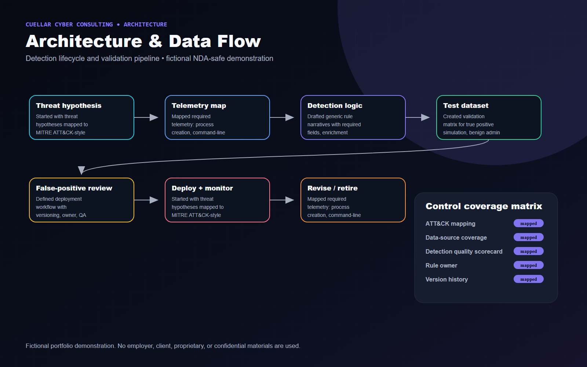
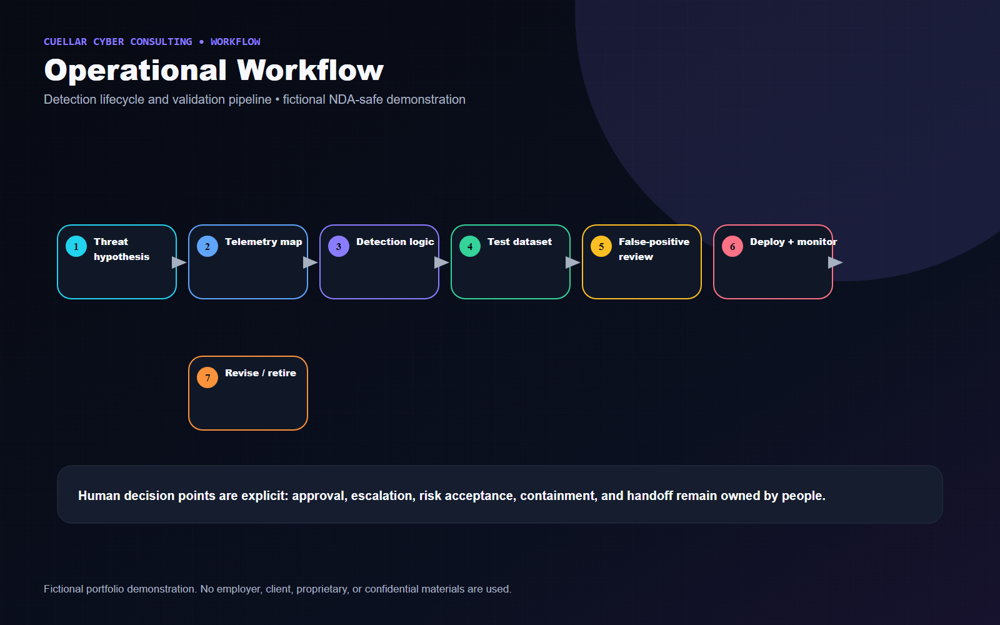
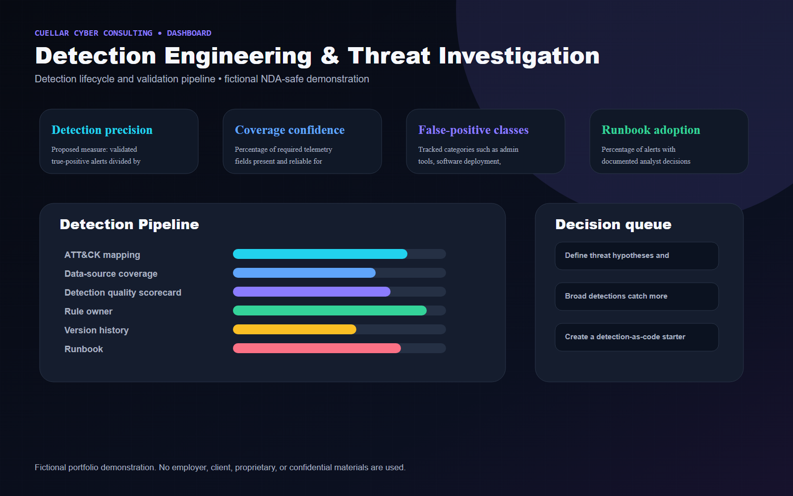

Executive Summary
Modeled an explainable detection lifecycle with ownership, test data, quality scoring, analyst runbooks, and tuning feedback loops.
Fictional Client Profile
Atlas Ridge Software, a fictional B2B SaaS company with Windows endpoints, cloud identity, and centralized SIEM analytics.
Client Challenge and Business Risk
Client situation
A fictional technology company needed repeatable detection engineering for suspicious PowerShell, identity abuse, and unusual administrative behavior instead of one-off noisy rules.
Business risk
Poorly engineered detections create false-positive fatigue, missed threat behaviors, unclear ownership, and fragile alert logic that no one safely maintains.
Project objectives
- Define threat hypotheses and behaviors before writing detection logic.
- Map telemetry requirements and gaps for identity, endpoint, and cloud activity.
- Use fictional test data to validate detection behavior and false-positive patterns.
- Document tuning, deployment, monitoring, and retirement criteria.
Constraints and assumptions
- All query examples are generic, fictional, and non-production.
- No real detection names, internal queries, proprietary data models, or confidential incident details are used.
- Detection quality is framed as an engineering lifecycle, not a promise of perfect coverage.
Technical Approach
- Started with threat hypotheses mapped to MITRE ATT&CK-style behaviors such as suspicious PowerShell, credential access indicators, identity abuse, and abnormal admin activity.
- Mapped required telemetry: process creation, command-line metadata, identity sign-in risk, privilege changes, cloud audit events, and endpoint alerts.
- Drafted generic rule narratives with required fields, enrichment steps, suppression logic, and investigation questions.
- Created validation matrix for true positive simulation, benign admin activity, false-positive classes, and data-quality checks.
- Defined deployment workflow with versioning, owner, QA signoff, analyst runbook, monitoring, and revision/retirement triggers.
Architecture Diagram

Operational Workflow

Security Controls
- ATT&CK mapping
- Data-source coverage
- Detection quality scorecard
- Rule owner
- Version history
- Runbook
- Tuning backlog
- Retirement criteria
Technologies and Frameworks
Deliverables
- Detection engineering lifecycle diagram
- Telemetry-to-detection architecture
- MITRE ATT&CK mapping visual
- Validation matrix
- Detection quality scorecard
- False-positive tuning workflow
- Analyst response runbook
- Rule version history concept

Business Outcomes and Success Measures
Metrics are labeled as illustrative example targets or proposed success measures. They are not real accomplishments.
| Measure | How it would be interpreted |
|---|---|
| Detection precision | Proposed measure: validated true-positive alerts divided by total alert volume after tuning. |
| Coverage confidence | Percentage of required telemetry fields present and reliable for the behavior being detected. |
| False-positive classes | Tracked categories such as admin tools, software deployment, helpdesk action, or lab activity. |
| Runbook adoption | Percentage of alerts with documented analyst decisions using the standard runbook. |
Tradeoffs and Design Decisions
- Broad detections catch more behavior but create more noise; narrow detections improve precision but may miss variants.
- Suppression logic should reduce known benign activity without hiding changes in attacker behavior.
- Detection retirement is a strength when telemetry or threat relevance changes.
Lessons Learned
- Explainability is a detection requirement: analysts need to know what fired, why it matters, and what to check next.
- A rule without test data, owner, and tuning path is operational debt.
Potential Next Phase
Create a detection-as-code starter pack with fictional templates for rule metadata, validation cases, runbooks, and quality scoring.
Fictional and NDA-Safe Disclaimer
Fictional portfolio demonstration. No employer, client, proprietary, or confidential materials are used. The content does not include or imitate employer dashboards, logos, terminology, real data, real incident details, internal detections, internal code, or confidential workflows.